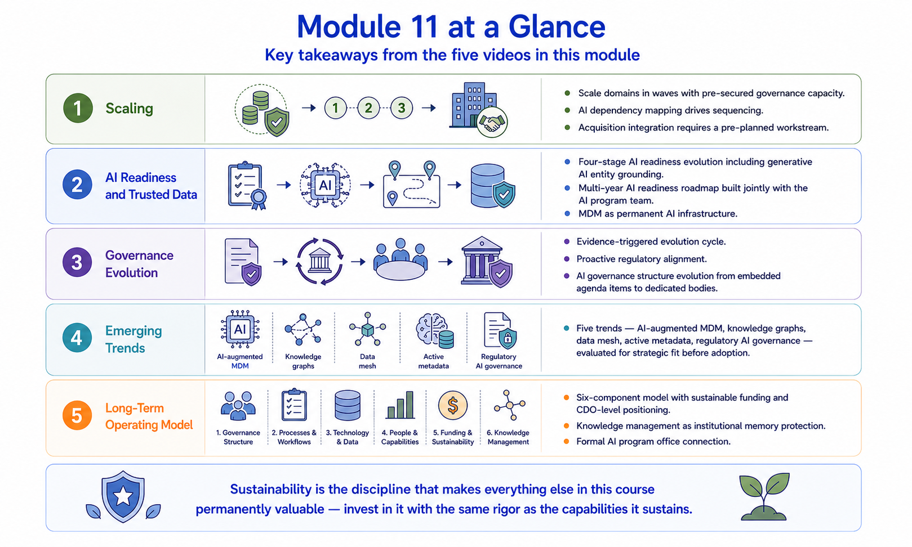

Module Recap
Module support notes
What This Module Covered
Sustainability is the discipline that determines whether the investment every prior module represents continues to compound in value or quietly erodes over time. The five disciplines covered in this module are not add-ons to an MDM program — they are the conditions under which an MDM program becomes permanent organizational infrastructure rather than a project that peaks at go-live and gradually degrades.
Each sustainability discipline has a direct AI dimension — because as the AI portfolio grows, the cost of MDM program degradation is no longer just a data quality problem. It is an AI reliability problem that compounds across every model in the portfolio simultaneously.
- Scaling MDM Programs — domain, organizational, and AI use case scaling require an integrated capacity plan that secures governance resources before each expansion rather than after the backlog forms
- AI Readiness and Trusted Data — AI readiness is a continuously evolving standard that must advance alongside the AI program's capabilities, including generative AI grounding and multi-agent system support
- Governance Evolution — governance frameworks must evolve through deliberate annual review cycles that track alongside cultural maturity and incorporate regulatory horizon scanning as a standard practice
- Emerging Trends — trend evaluation against organizational fit prevents both premature adoption and competitive obsolescence; data mesh and AI-native MDM platforms require specific governance adaptation
- Long-Term Operating Model — a self-sustaining operating model funds itself through documented value, owns its roadmap, absorbs organizational change, and embeds AI accountability structurally

The AI Sustainability Thread Through Module 11
The AI sustainability thread through Module 11 is the most consequential of any module — because sustainability failures have AI consequences that are difficult to reverse. A governance capacity gap that develops during unplanned scaling degrades AI model performance across the entire portfolio. An AI readiness standard that doesn't evolve with the AI program leaves generative AI without the entity disambiguation it requires. A governance framework that doesn't adapt to AI regulation creates compliance exposure across every model the organization has deployed. A data mesh adoption that doesn't preserve MDM's standards authority fragments the AI data supply chain that the entire AI program depends on.
Note
The AI sustainability stakes of each discipline: Scaling — governance capacity gaps degrade AI model performance across the portfolio; AI Readiness — standards that don't evolve leave new AI capabilities without governance; Governance Evolution — frameworks that don't adapt to AI regulation create compliance exposure; Emerging Trends — data mesh adoption without MDM standards authority fragments the AI data supply chain; Long-Term Operating Model — structural AI accountability is what makes AI governance reliable rather than dependent on individual effort.
![A thread connecting all five sustainability disciplines with their specific AI sustainability consequence: Scaling — governance capacity gaps degrading AI model performance portfolio-wide; AI Readiness — standards not evolving leaving generative AI without entity disambiguation; Governance Evolution — regulatory gaps creating AI compliance exposure; Emerging Trends — data mesh without MDM standards authority fragmenting the AI data supply chain; Long-Term Operating Model — structural AI accountability making AI governance reliable rather than individual-dependent.](../assets/m11-recap-ai-thread.png)
What the Course Has Built
Across eleven modules, this course has built a complete MDM capability — from the foundational understanding of what master data is and why it matters, through strategy definition, data quality assessment, technology selection, governance design, integration architecture, implementation discipline, operational excellence, value measurement, and finally the sustainability practices that keep the program capable and growing.
The AI readiness thread that runs through every module reflects the reality that organizations face today — MDM is no longer a data management discipline pursued for its own sake. It is the data foundation on which every AI initiative depends, and the organizations that build and sustain it well will have a competitive advantage in AI capability that those without governed master data cannot replicate.
Tip
The final knowledge check is your opportunity to validate your understanding across all eleven modules before receiving your certificate. Approach it as a practical review — for each question, think about which module's core discipline it addresses, and how the AI readiness thread connects that discipline to the AI program outcomes the course has emphasized throughout. The strongest answers connect the technical discipline to the business and AI consequence it is designed to serve.

MDM done well is not a data program that happens to support AI — it is an AI reliability infrastructure that happens to be built on data governance.